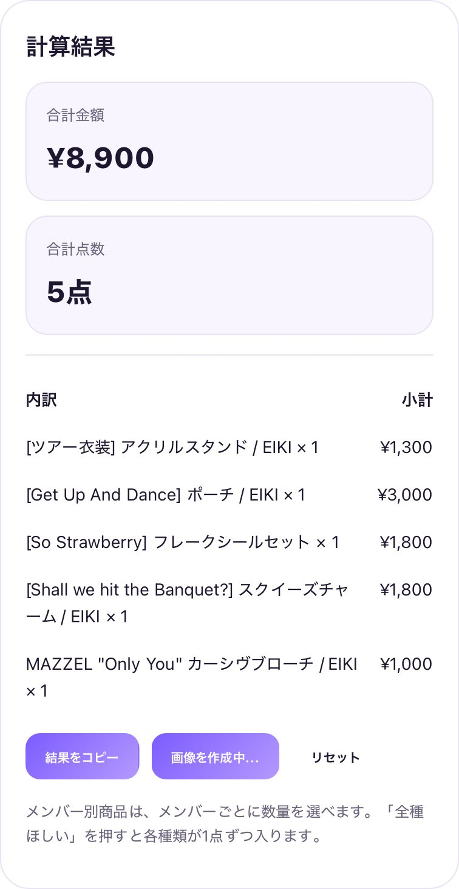
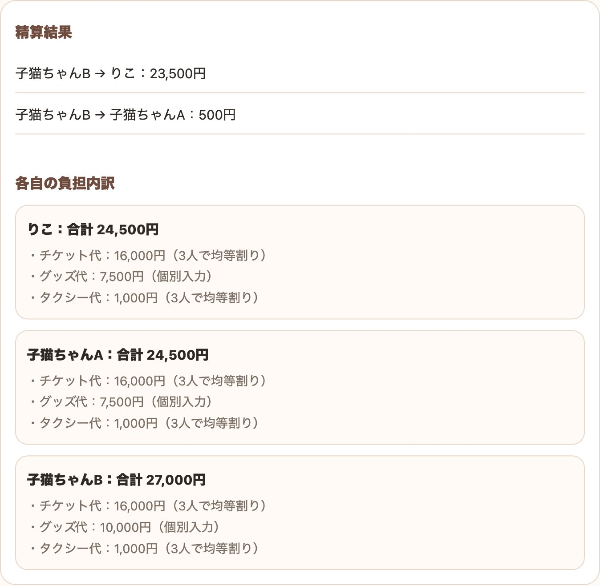
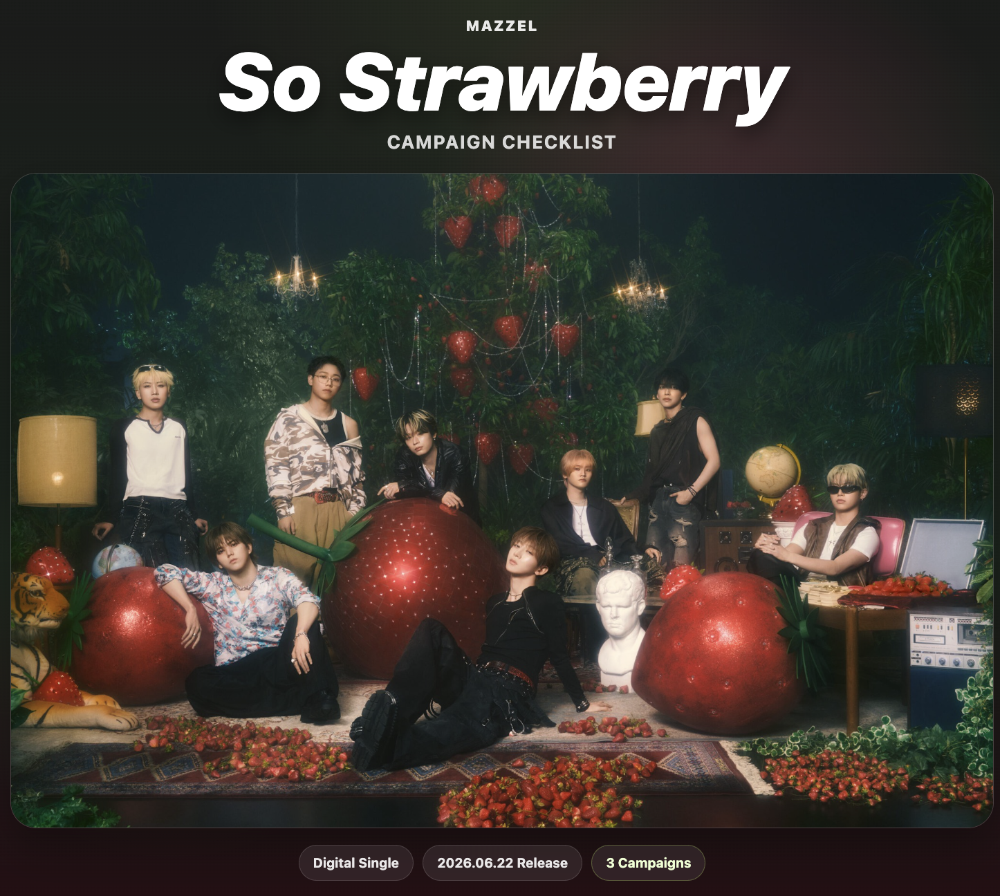

道具いちらん
べんり

グッズ計算機 ECオンラインストアの合計金額をその場で 使う
 グッズ計算機 会場
グッズ計算機 会場会場で買う分を選びながら合計を確認 使う

立替精算ツールみんなの立替をまとめて精算 使う

新曲キャンペーン応募・DL・締切をまとめて確認 見る
便利なもの、遊べるもの。つくったものここに並べてます

グッズ計算機 EC
グッズ計算機 会場
立替精算ツール
新曲キャンペーン